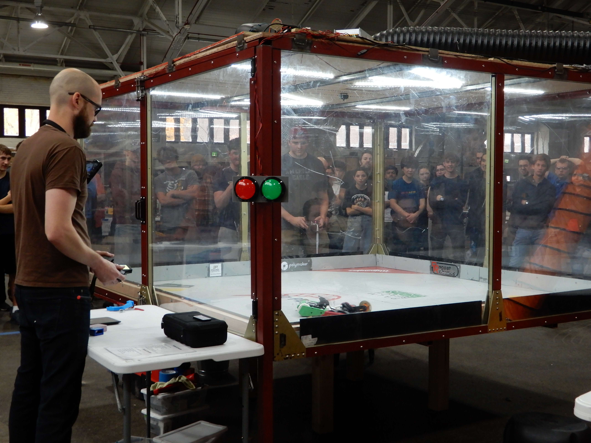
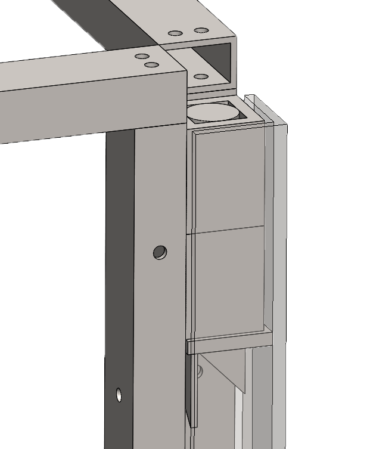
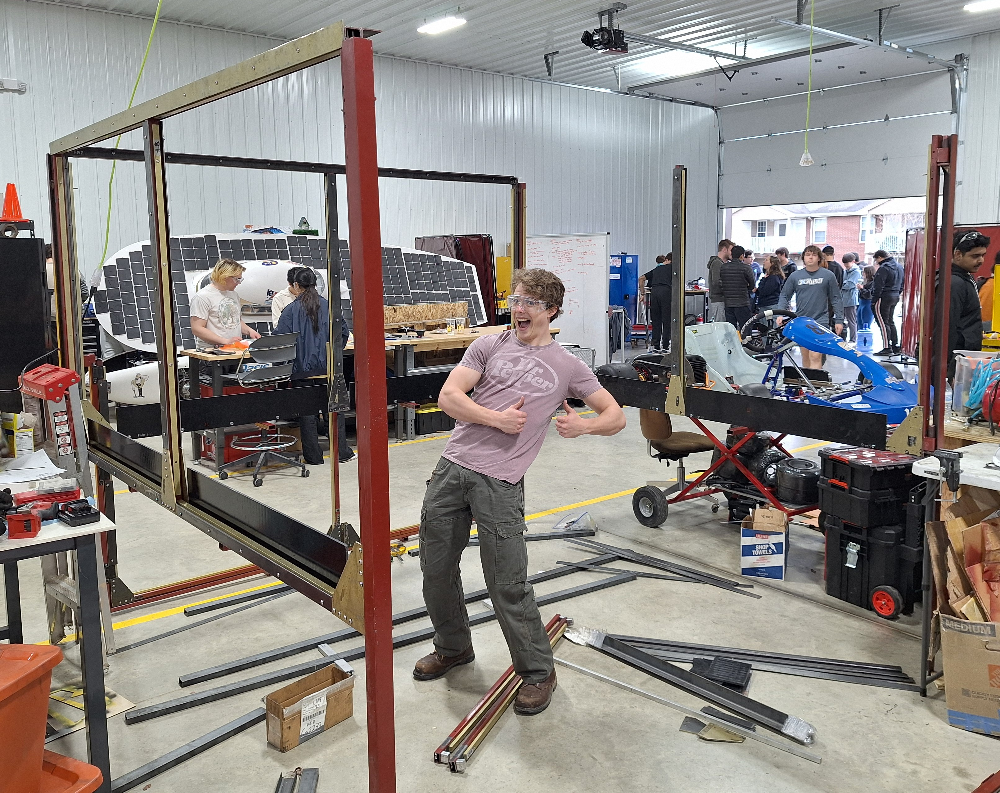
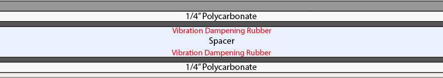
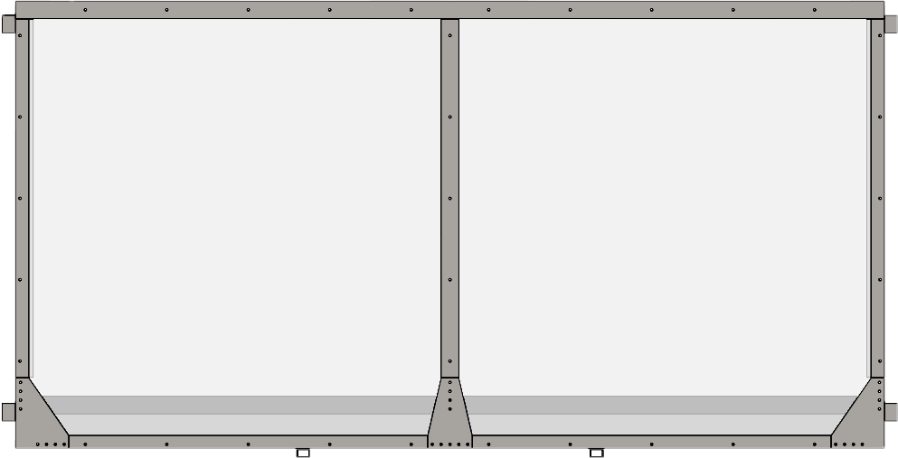
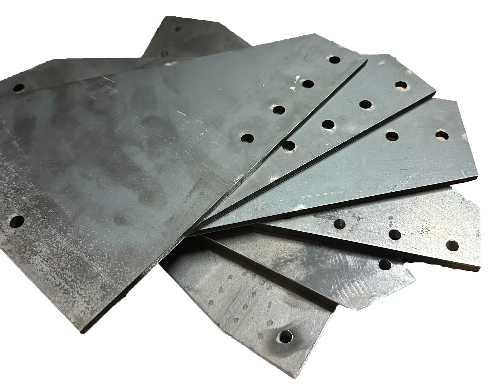
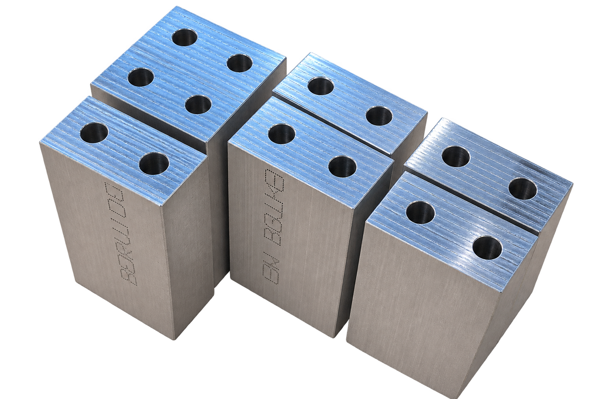
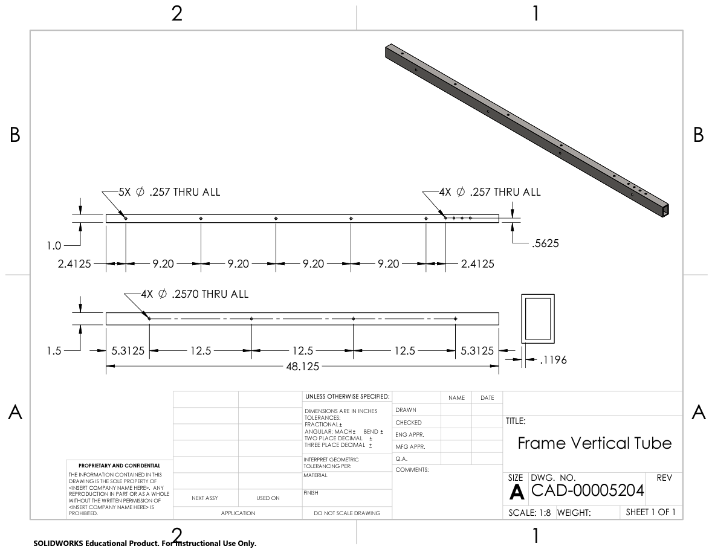
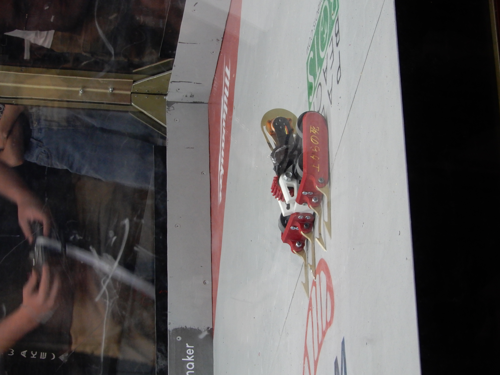

My role
Project lead: structural design, requirements verification, and tool and component sourcing
Manufacturing lead: coordinated three manufacturing leads and a 20-person team
The challenge
I led the design and construction of a new arena for Purdue's combat robotics club, Railside Robotics. It needed at least 64 square feet of combat space, clear viewing, quick repairs, and a $10,000 budget. Because our workshop and competition venue were four miles apart, transport and setup were central design constraints.

Assembly and transport
I designed an 8 × 8 ft arena with 4 ft walls and an elevated floor for viewing. To fit a 4 × 8 ft trailer and speed setup, I divided the frame into flat-packed sections that stack at peg-and-tube joints without installing fasteners. Slide-in panels let members assemble different sections in parallel; the team met its one-hour setup target twice.


Designing for safety
I specified two layers of 1/4-inch polycarbonate with a 1-inch air gap to reduce the chance of a breach. An 800 cfm extraction fan provides ventilation for battery-fire fumes.

Designing for repairs
I split the polycarbonate walls into 4 × 4 ft panels so local damage would require replacing less material. Top-loading panels and replaceable floor sections make repairs accessible during an event. For Railside Rumble 2, we added mild-steel kickplates to prevent robots from getting stuck in the kickplates.

Manufacturing and collaboration
I coordinated three manufacturing leads and a 20-person team manufacturing more than 40 unique parts using CNC mills, lathes, laser cutters, and welding. I used drawings to communicate requirements, trained members in Aras Innovator PDM, and linked drawings to part documents so the team could coordinate fabrication. The completed arena cost $7,000 against a $10,000 budget.



Results
The completed arena has hosted two competitions, with no breaches or maintenance required during either event. We revised and strengthened the floor's structural supports and the ceiling supports after the initial design to improve rigidity. The team has assembled the flat-packed arena in one hour; another competition is scheduled for November 14, 2026.
